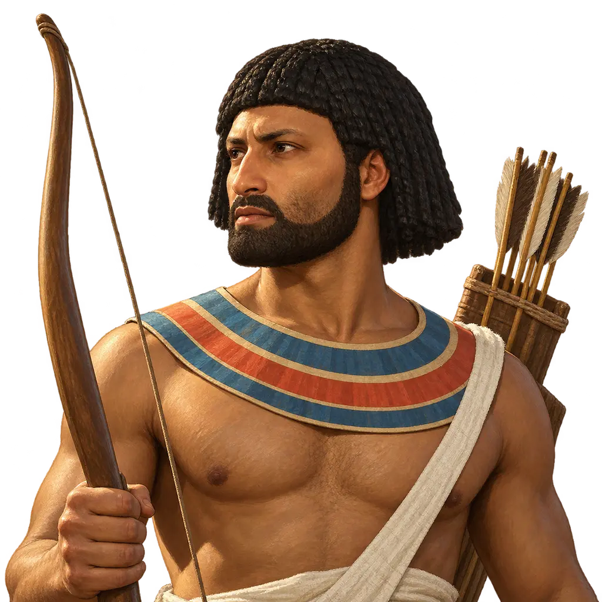
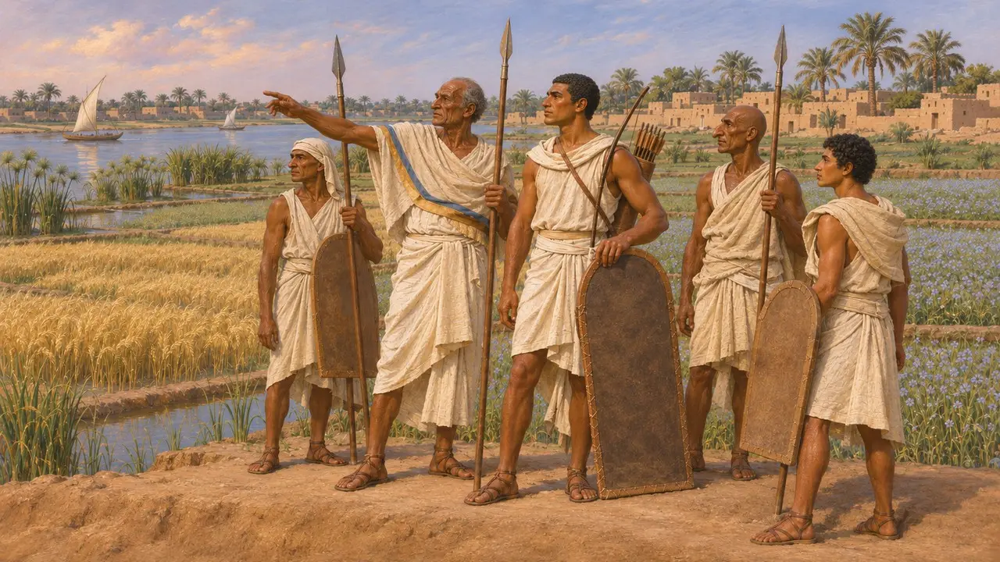
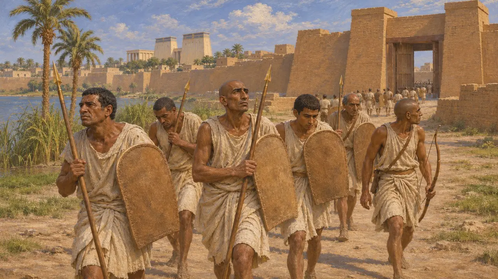
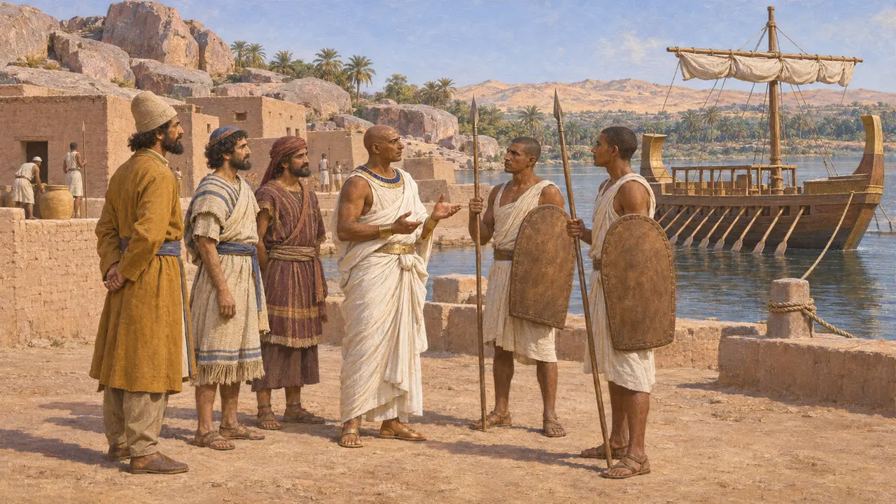
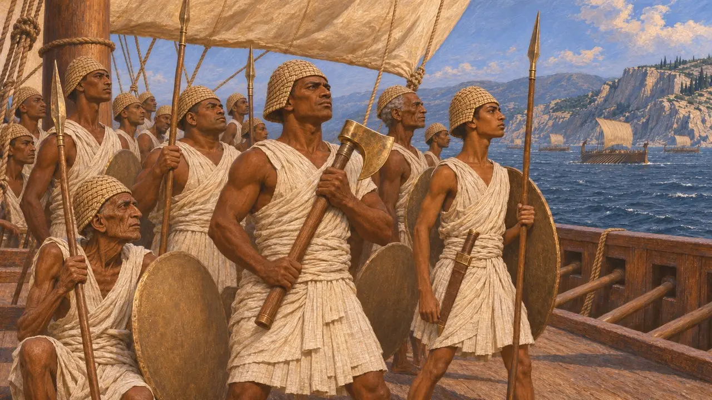
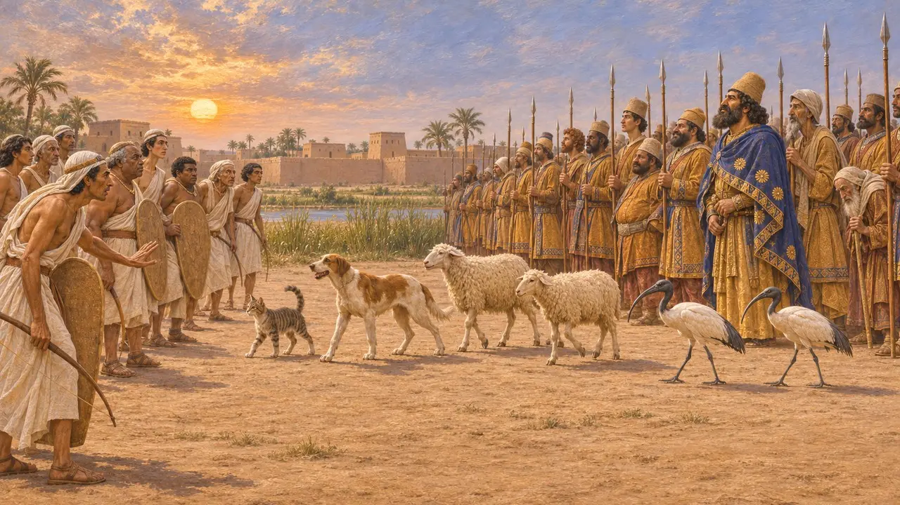

سربازان مصری
جنگاوران بومی مصرِ دوران سائی، که در سال 525 پ.م. در پلوزیوم از کمبوجیه شکست خوردند
در بازی: مرحلهٔ ۲: نیزهبردار
هنگامی که کمبوجیه در سال 525 پ.م. به مصر تاخت، سربازان مصری از پادشاهی دودمان بیستوششم (سائیسی) دفاع کردند. جنگاوران بومی، که نویسندگان یونانی آنان را ماخیموی مینامیدند، دوشادوش مزدوران یونانی و کاریایی میجنگیدند. پس از شکست در پلوزیوم و سقوط ممفیس، مصر به ساتراپیای از قلمرو پارسیان بدل شد و مصریان از آن پس در پادگانها و ناوگانهای شاه خدمت کردند.
در بازی: در ممفیس آنان در قالب کمانداران، تیراندازان، نیزهداران و سپاه احضاری در پس سپرهای بلند چرمی ظاهر میشوند، همراه با یک سرکرده و «پهلوان پسامتیک». در منابع از چنین پهلوانی برای پسامتیک نشانی نیست.

طبقهای جنگاور از سرزمین نیل
مورد مناقشههرودوت میگوید جنگاوران مصر طبقهای موروثی بودند در دو گروه: هرموتوبیها و کالاسیریها. هر یک از آنان قطعه زمینی معاف از مالیات داشت و از پرداختن به پیشههای دیگر منع شده بود. شمار 160,000 و 250,000 نفری که او میدهد عموماً بسیار بیش از واقع دانسته میشود. تاریخنگاران هنوز دربارهٔ اینکه این طبقه تا چه اندازه بسته بود بحث میکنند و بسیاری هستهٔ آن را سربازان لیبیایی میدانند که سدهها پیشتر در دلتا اسکان یافته بودند.
Herodotus 2.164-168; A. B. Lloyd, Herodotus Book II, 1975-1988

پلوزیوم و سقوط ممفیس
روایت باستانیهرودوت روایت میکند که پسامتیک سوم، که به گفتهٔ او پادشاهیاش تنها شش ماه پایید، در دهانهٔ پلوزیومی نیل با کمبوجیه روبهرو شد. مزدوران یونانی و کاریایی او پسران فانس را کشتند، همان سرکردهٔ مزدوران که به پارسیان پیوسته بود. پس از نبردی سخت، مصریان به ممفیس گریختند، جارچی پارسی و ملوانان کشتیاش را کشتند و در محاصره ماندند تا سرانجام تسلیم شدند. هرودوت برای هیچیک از دو سپاه شماری به دست نمیدهد.
Herodotus 3.10-13

افسران مصری در دوران فرمانروایی پارسیان
در اسنادتندیس اوجاهورسنه گواهی میدهد که او در روزگار آماسیس و پسامتیک سوم فرمانده جنگناوهای شاهی بود و سپس به خدمت کمبوجیه و داریوش درآمد. از آشوبی بزرگ در سرزمین یاد میکند، شاید همان فتح، اما از نبردی سخن نمیگوید. پاپیروسهای آرامی الفانتین، که بیشترشان از سدهٔ پنجم پ.م. هستند، نشان میدهند که پادگان مرز جنوبی در دوران فرمانروایی پارسیان همچنان برپا بود و بخشی از سربازانش یهودی و آرامی بودند.
Statue of Udjahorresnet (Vatican); Elephantine papyri

مصریان در جنگهای خشایارشا
روایت باستانیهرودوت میگوید مصر در پایان پادشاهی داریوش شورید و خشایارشا آن را دوباره گرفت. به گزارش او، مصر سپس 200 کشتی به جنگ یونان فرستاد که مردانشان کلاهخودهای بافته، سپرهای لبهپهن، نیزههای یورش به عرشه، تبرهای بزرگ و کاردهای بلند داشتند. او آنان را بهترین دسته از سپاهیان شاه در آرتمیسیون میداند و میگوید رزمندگان دریایی مصری را در پلاته به خشکی آوردند تا پیاده بجنگند.
Herodotus 7.1; 7.7; 7.89; 8.17; 9.32

جانوران مقدس در پلوزیوم
افسانهٔ متأخرپولیاینوس، که حدود هفت سده بعد مینوشت، میگوید کمبوجیه سگها، گوسفندان، گربهها و ایبیسها را پیشاپیش سپاهش نهاد تا مصریان از بیم آسیب رساندن به جانورانی که برایشان مقدس بودند تیر نیندازند. هیچ نویسندهٔ پیشینی این داستان را نقل نمیکند و بیشتر به حکایتی از ترفندهای جنگی میماند تا تاریخ.
Polyaenus, Stratagems 7.9
منابع
- Herodotus, Histories, books 2, 3, 7-9
- Statue of Udjahorresnet (G. Posener, La première domination perse en Égypte, 1936)
- P. Briant, From Cyrus to Alexander, 2002
- A. B. Lloyd, Herodotus Book II: Commentary, 1975-1988
- Polyaenus, Stratagems 7.9